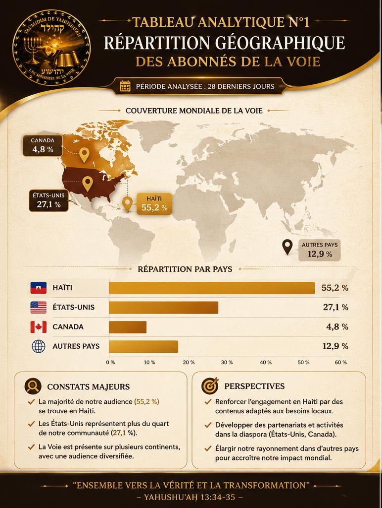
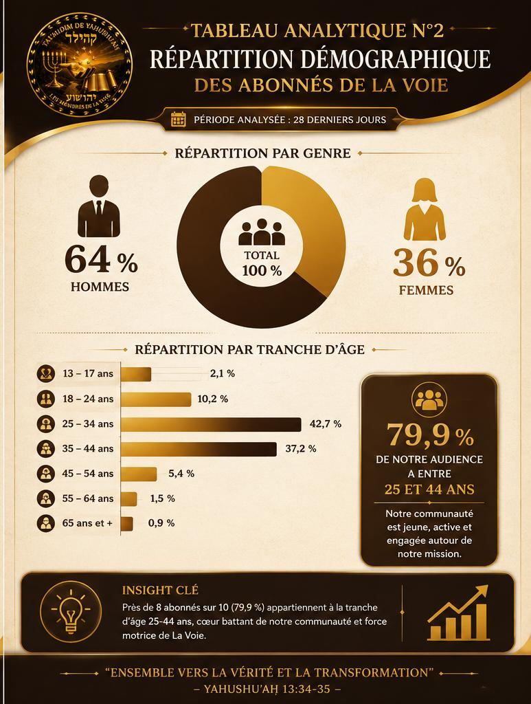
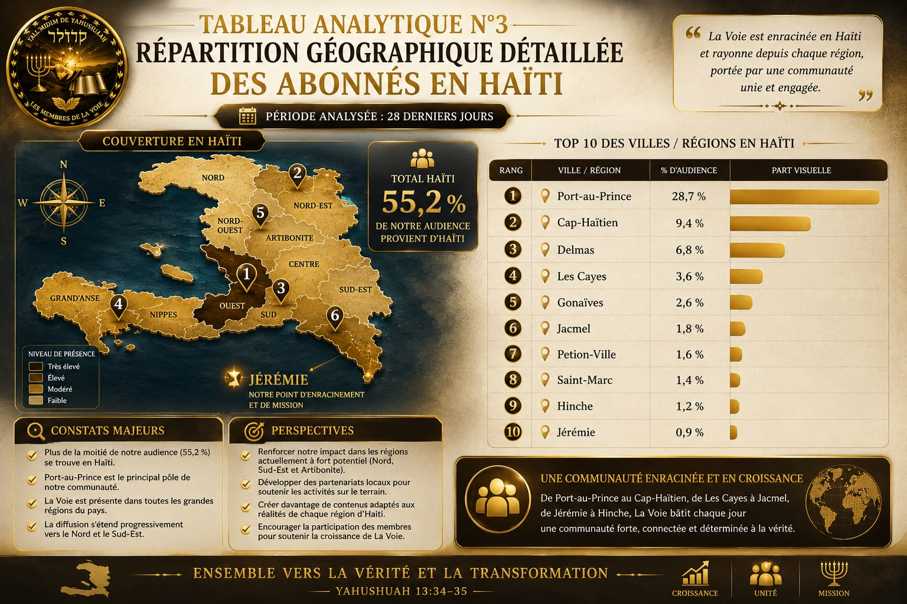

Observer · Comprendre · Servir
Chaque mois, nous publions les données ainsi que leur analyse. L'objectif n'est pas de nous glorifier, mais de mieux comprendre où le message est reçu, afin de mieux servir celles et ceux qui recherchent la vérité. Cette rubrique est un rapport vivant : chaque mois enrichit la précédente d'analyses, de comparaisons, de tendances et de projections.

Depuis quelque temps, plusieurs personnes nous demandent : où se développe La Voie ?
Les statistiques des 28 derniers jours montrent que plus de la moitié de notre audience se trouve en Haïti. La diaspora représente également une part importante, notamment aux États-Unis et au Canada.
Ces chiffres ne servent pas à nous glorifier. Ils nous aident à mieux comprendre où le message est reçu, afin de mieux servir celles et ceux qui recherchent la vérité.
Chaque personne représente une vie. Chaque vie représente une responsabilité.

Les données démographiques montrent que notre audience est principalement composée d'adultes âgés de 25 à 44 ans.
Cette tranche d'âge correspond souvent aux années où l'on construit une famille, où l'on prend des responsabilités, et où l'on recherche des fondements solides.
Les hommes sont actuellement majoritaires. Nous espérons cependant voir davantage de femmes découvrir elles aussi le message de restauration.

La présence de notre audience n'est pas limitée à une seule ville.
Port-au-Prince constitue aujourd'hui le principal pôle. Mais Cap-Haïtien, Delmas et plusieurs autres régions témoignent également d'un intérêt croissant.
Notre souhait est que cette œuvre puisse atteindre toutes les régions d'Haïti.